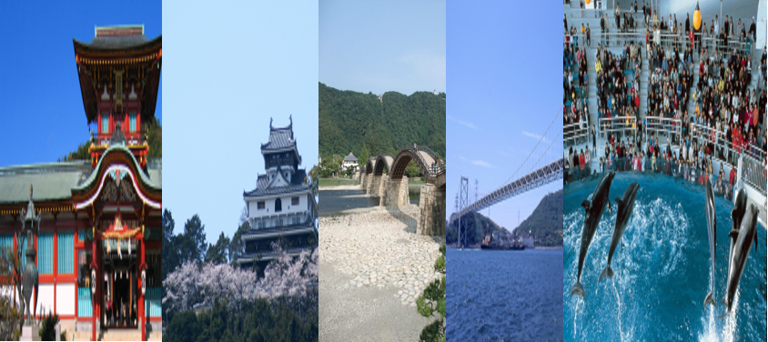

日帰りツアー②

ツアーの説明
このページでは、日帰りで「しものせき水族館」「関門海峡」「防府天満宮」「錦帯橋」「岩国城」を巡るツアーを紹介いたします。
＜観光地の位置＞
|
＜公共交通機関を利用して行く方法＞ JR新下関駅～JR下関駅 ↓ バス しものせき水族館 ↓ 徒歩 関門海峡 ↓ バス JR下関駅～JR新下関駅～JR新山口駅～JR防府駅 ↓ バス 防府天満宮 ↓ バス JR防府駅～JR西岩国 ↓ バス 錦帯橋 ↓ タクシー 岩国城 ↓ タクシー JR新岩国駅～帰路 |
＜自家用車を利用して行く方法＞ 中国自動車道下関ICまたは関門トンネル ↓ 県道57号線～国道9号線 しものせき水族館 ↓ 国道9号線 関門海峡 ↓ 国道9号線～中国自動車道下関IC～山陽自動車道防府東IC～県道24号線～県道54号線～県道184号線 防府天満宮 ↓ 県道184号線～県道54号線～県道24号線～山陽自動車道防府東IC～山陽自動車道岩国IC～国道2号線～県道112号線 錦帯橋 ↓ 県道114号線 岩国城 ↓ 県道114号線～県道1号線～山陽自動車道岩国IC～ 帰路 |